リヤシートバツクを前倒位置にする。
 |
ボルト2本取り付け部のクリップをはずす。
 |
リヤシートバツクカバーをめくりボルト2本をはずし、リヤシートバツクASSYを取りはずす。
パーキングブレーキ ケーブルASSY NO.1 取り外し |
| 1. バッテリマイナスターミナル切り離し |
| 2. リヤシートバックASSY取りはずし（リヤシート一体可倒式） |
リヤシートバツクを前倒位置にする。
|
ボルト2本取り付け部のクリップをはずす。
|
リヤシートバツクカバーをめくりボルト2本をはずし、リヤシートバツクASSYを取りはずす。
| 3. リヤシートクッションASSY取りはずし（リヤシート一体可倒式） |
前部のロックのレバーを図の矢印の方向に押してかん合をはずす。
リヤシートベルトを、リヤシートクッションカバー & パッド後部のゴムバンドに通す。
 |
リヤシートクッションASSY後部のフックのかん合をはずし、リヤシートクッションASSYを取りはずす。
| 4. リヤシートバック ヒンジSUB-ASSY RH取りはずし（リヤシート一体可倒式） |
| 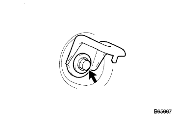 |
ボルトをはずし、リヤシート バツク ヒンジ RHを取りはずす。
| 5. リヤシートバック ヒンジSUB-ASSY LH取りはずし（リヤシート一体可倒式） |
ボルトをはずし、リヤシート バツク ヒンジ LHを取りはずす。
| 6. リヤシートバックASSY RH取りはずし（リヤシート分割可倒式） |
| 7. リヤシートバックASSY LH取りはずし（リヤシート分割可倒式） |
リヤシートバツクを前倒位置にする。
| 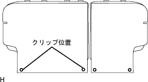 |
ボルト2本取り付け部のクリップをはずす。
|
リヤシートバツクカバー下部をめくりボルト2本をはずし、リヤシートバツクを取りはずす。
| 8. リヤシートクッションASSY取りはずし（リヤシート分割可倒式） |
リヤシートクッションASSY前側をリヤシート クッション ロック ストライカにロックさせる。
| 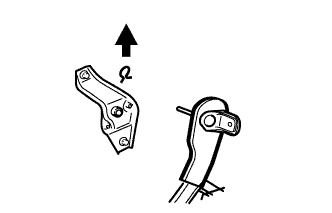 |
リヤシートバックヒンジRHよりスナップリングを取りはずす。
リヤシートクッションASSY右側ブラケットの、リヤシートヒンジRHを引き抜いて取りはずす。
 |
ボルトをはずし、リヤシ－トヒンジLHを取りはずす。
リヤシートクッションASSYのリヤシート フックASSY RHを引き、リヤシートクッションASSY前部のかん合をはずす。
リヤシートベルトを、リヤシートクッションカバー & パッド後部のゴムバンドに通す。
リヤシートクッションASSYを取りはずす。
| 9. フロントシートASSY RH取りはずし |
シートトラックアジャステイングハンドルを操作して、フロントシートASSYをリヤモーストにする。
| 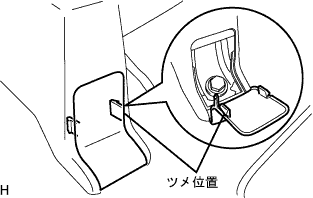 |
フロントシートレッグカバーのツメのかん合をはずし、フロント側のボルト2本を取りはずす。
シートトラックアジャステイングハンドルを操作して、フロントシートASSYをフロントモーストにする。
フロントシートレッグカバーのツメのかん合をはずし、リヤ側のボルト2本を取りはずす。
ワイヤハーネスをはずしコネクタを切り離す。
フロントシートASSY RHを車両より取りはずす。
| 10. フロントドアスカッフ プレート RH取りはずし |
 |
手で上方に引いてツメのかん合をはずし、フロントドアスカツフプレートＲＨを取りはずす。
| 11. カウルサイドトリム ボード RH取りはずし |
| 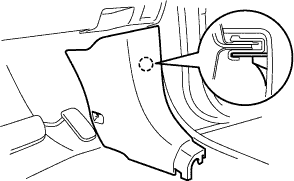 |
ツメのかん合をはずし、カウルサイドトリムボードを取りはずす。
| 12. フロントドア オープニングトリム ウェザストリップ RH取りはずし |
| 13. リヤシート 3ポイントタイプ ベルトASSY OUT RH取りはずし（フロアアンカ部） |
ボルトをはずし、リヤシート 3ポイントタイプ ベルトASSY OUT RH（フロアアンカ部）を取りはずす。
| 14. ラップベルト アウタアンカ カバー取りはずし |
 |
ツメのかん合をはずし、ラップベルト アウタアンカ カバーを取りはずす。
| 15. フロントシート アウタベルトASSY RH取りはずし（フロアアンカ部） |
ボルトをはずし、フロントシート アウタベルトASSY RH（フロアアンカ部）を取りはずす。
| 16. サイドNO.1 トリムASSY RH取りはずし |
| 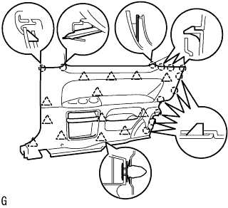 |
手で車両内側方向に引いて、クリップおよびツメのかん合をはずし、サイドN o.1トリムASSY RHを取りはずす。
| 17. フロントピラー ガーニッシュ LWR RH取りはずし |
| 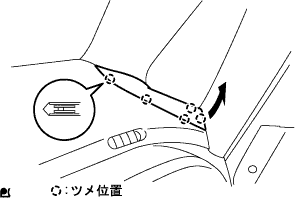 |
車両後方端部から上方に引き、ツメのかん合5箇所をはずす。
車両後方に引き、フロントピラーガーニツシユLWR RHを取りはずす。
| 18. フロントピラー ガーニッシュ RH取りはずし |
| 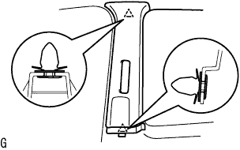 |
ガーニツシユを手で車両内側方向に引いて、クリップのかん合をはずし、センタピラーガーニッシュRHを取りはずす。
| 19. リヤドア オープニングトリム ウェザストリップ LH取りはずし |
| 20. ピラーNO.1 ガーニッシュ LH取りはずし |
ツメのかん合をはずし、ピラーNo.1ガーニツシユLHを取りはずす。
| 21. フロントピラー ガーニッシュ LH取りはずし |
 |
ガーニッシュ上部から手で車両内側方向に引いて、クリップのかん合をはずし、フロントピラーガーニッシュLHを取りはずす。
| 22. フロントピラー ガーニッシュ LWR LH取りはずし |
 |
ツメ4箇所のかん合をはずし、フロントピラーガーニツシユ LWR LHを取りはずす。
| 23. インストルメントクラスタフィニッシュ パネル NO.1取りはずし |
 |
インストルメントクラスタフイニツシユパネルを車両後方に引き、ツメ8箇所のかん合をはずし、インストルメントクラスタフイニツシユパネルを取りはずす。
| 24. コンビネーションメータASSY取りはずし |
スクリユー2本を取りはずす。
コンビネーシヨンメータASSYを車両後方に引き、クリツプのかん合をはずす。
 |
コネクタを切り離し、コンビネーシヨンメータASSYを取りはずす。
| 25. グローブコンパートメント ドアSUB-ASSY取りはずし |
 |
スクリュー<J>2本をはずし、グラブコンパートメントドアを取りはずす。
| 26. インストルメントパネル レジスタASSY NO.1取りはずし |
 |
インストルメントパネル レジスタASSY No.1を車両後方に引き、ツメ5箇所のかん合をはずし、インストルメントパネルレジスタASSY No.1を取りはずす。
| 27. インストルメントクラスタフィニッシュ パネルSUB-ASSY CTR取りはずし |
シフトレバーを下げ、ステアリングをチルトダウンする。
 |
インストルメントクラスタフイニツシユパネル CTRを車両後方に引き、ツメ12箇所のかん合をはずし、インストルメントクラスタフイニツシユパネル CTRを取りはずす。
| 28. インストルメントパネルフィニッシュ プレート取りはずし |
 |
スクリュー<B>1本をはずし、インストルメントパネル フイニツシユプレートを車両後方に引き、ツメ4箇所のかん合をはずし、インストルメントパネル フイニツシユプレートを取りはずす。
| 29. インストルメントパネルパッセンジャーエアバッグASSY用コネクター切り離し |
 |
インストルメントパネルパッセンジャーエアバッグＡＳＳＹ用コネクタを切り離す。
| 30. インストルメントパネル W/パッセンジャーエアバッグASSY取りはずし |
グラブボックス内のカバーを取りはずし、そこからパッセンジャーエアバッグ固定ボルト<A>を取りはずす。
スクリュー<C>もしくは<D>4本を取りはずす。
インストルメントパネル手前側を上方に引きあげ、ツメ7箇所のかん合をはずし、中央部のコネクタおよび、クランプを切り離す。
ステアリングホイールASSYを傷つけないように注意し、インストルメントパネルをパッセンジャーエアバッグ、ダクト類とともに一体で取りはずす。
スクリュ<B>2本をはずし、サイド デフロスタノズル ダクト No.2をインストルメントパネル W/ パッセンジャーエアバッグASSYから取りはずす。
スクリュ<B>2本をはずし、ヒータ ツウ レジスタ ダクト No.3をインストルメントパネル W/ パッセンジャーエアバッグASSYから取りはずす。
スクリュ<B>2本をはずし、サイド デフロスタノズル ダクト No.1をインストルメントパネル W/ パッセンジャーエアバッグASSYから取りはずす。
スクリュ<B>2本をはずし、ヒータ ツウ レジスタ ダクト No.1をインストルメントパネル W/ パッセンジャーエアバッグASSYから取りはずす。
| 31. インストルメントパネルフィニッシュ パネル LWR CTR取りはずし |
| 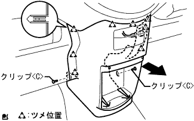 |
クリップ<ｃ>2箇所、ツメ8箇所のかん合をはずし、インストルメントパネルフィニッシュパネル LWR CTRをとりはずす。
パワーアウトレツトソケットのコネクタを切り離し、インストルメントパネルフィニッシュパネル LWR CTRを取りはずす。
スクリュ３本をはずし、インストルメントカツプホルダを取りはずす。
| 32. フロントフロア カーペットASSY FR取りはずし |
フロントフロア サイレンサパッド RHからフロント フロア サイレンサパッド リヤ RHにかけてフロントフロア カーペットASSY FRをめくる。
| 33. フロントフロアサイレンサ パッド RH取りはずし |
| 34. フロア ボード NO.1取りはずし |
クリップ2個のかん合をはずし、フロアボードNo.1を取りはずす。
| 35. フロントフロアサイレンサ パッドSUB-ASSY RR RH取りはずし |
| 36. ワイヤアジャスティング ナット NO.1緩め |
| 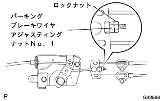 |
パーキングブレーキインタミデイエイトレバー部のロックナットおよび、パーキングブレーキワイヤアジヤステイングナツト No.1を緩める。
| 37. パーキングブレーキ ケーブルASSY NO.1切り離し |
| 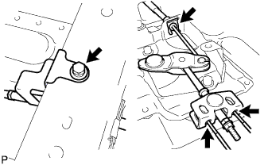 |
パーキングブレーキケーブルASSY No.２および、パーキングブレーキケーブルASSY No.３をパーキングブレーキイコライザから切り離す。
クリップをはずし、パーキングブレーキケーブルASSY No.１をパーキングブレーキインタミディエイトレバーから切り離す。
クランプのボルトをはずし、フロアからパーキングブレーキケーブルASSY No.１を切り離す。
| 38. パーキングブレーキコントロール ペダルASSY取りはずし |
パーキングブレーキスイッチASSYのコネクタを切り離す。
| 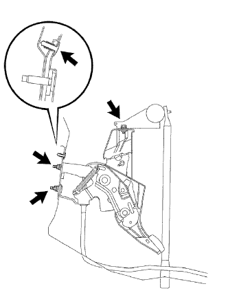 |
エンジンルーム側からパーキングブレーキペダルASSYの取り付けナット2個を取りはずす。
上部ボルトおよびクリップをはずし、パーキングブレーキペダルASSYを取りはずす。
| 39. パーキングブレーキ ケーブルASSY NO.1取りはずし |
| 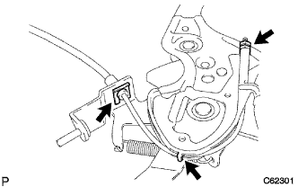 |
パーキングブレーキペダルから、パーキングブレーキケーブルASSY No.1のロックナットおよびアジャスティングナットを取りはずす。
パーキングブレーキケーブルASSY Ｎｏ．１固定クリップを取りはずす。
ツメを起こし、パーキングブレーキペダルからパーキングブレーキケーブルASSY Ｎｏ．1を取りはずす。